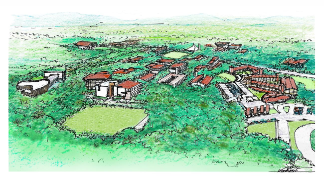

My Favorite Place
Where
My favorite place is the Ateneo de Manila campus, where I have my onsite classes.
Why
The Ateneo de Manila campus is my favorite place because I find it very relaxing to walk around the campus and appreciate the architecture of the buildings and the natural beauty of the greenery after classes end. It's also nice that the campus is so big and some buildings are far from each other, because then I have to walk a lot which is good exercise. Running to get to my next class when I have consecutive classes is also great exercise, but is something I enjoy slightly less.